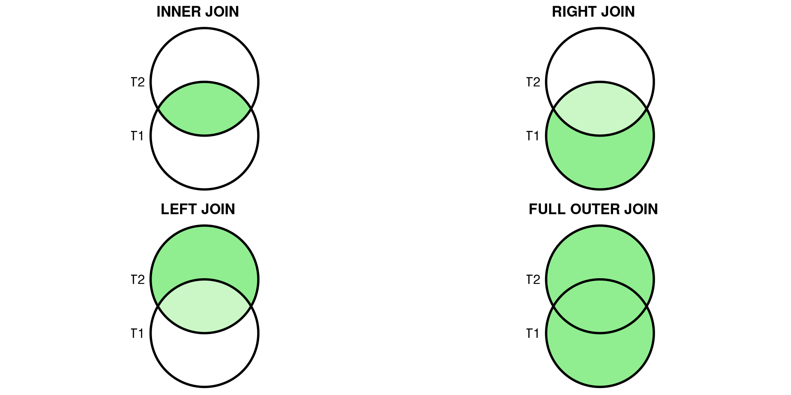
Lecture 3 — Data Management & Collection
Data & Code Management: From Collection to Application
Samuel Orso
2025-10-16
Learning goals
- Understand relational models: tables, rows, columns, keys, constraints
- Write SQL:
SELECT,WHERE,ORDER BY,LIMIT,GROUP BY,HAVING,JOIN - Connect to SQL from R (DBI) and Python (sqlite3 / SQLAlchemy / pandas)
- Understand HTTP and the request/response cycle
- Know when to use APIs vs web scraping
- Parse HTML using CSS selectors (R
rvest, PythonBeautifulSoup) - Peek at dynamic sites
- Use regex for cleaning and extraction (R & Python)
Relational Databases
Typical Data for a Project
| Type | Description |
|---|---|
| Transactional | Your data |
| Behavioral | Your data |
| Public Data | Open datasets |
| Premium Data | Paid datasets |
Typical Data for a Project
💳 Transactional (records of exchanges) - What it looks like: order lines, invoices, payments
- Typical fields: order_id, customer_id, sku, qty, price, timestamp
- Example dataset: UCI Online Retail II (real e-commerce transactions)
https://archive.ics.uci.edu/datasets?search=Online+Retail
👣 Behavioral (events & interactions) - What it looks like: page views, clicks, scrolls, add-to-cart
- Typical fields: user_id, session_id, event_name, event_params, ts
- Example datasets/docs: GA BigQuery sample (web/app) and Snowplow events model
https://developers.google.com/analytics/bigquery/web-ecommerce-demo-dataset/ • https://docs.snowplow.io/docs/fundamentals/events/
🏛️ Public Data (open gov & orgs) - What it looks like: macro indicators, demographics, prices, geo
- Where to find: opendata.swiss, World Bank WDI, Eurostat
https://www.bfs.admin.ch/bfs/en/home/services/ogd/portal.html • https://data.worldbank.org/indicator • https://ec.europa.eu/eurostat/data
💼 Premium Data (licensed/commercial) - What it looks like: real-time market data, fundamentals, consumer panels
- Providers (examples): Bloomberg Terminal, S&P Global Market Intelligence
https://www.bloomberg.com/professional/products/bloomberg-terminal/ • https://www.spglobal.com/market-intelligence/en
Data Warehouse
In an organization, data is typically stored in:
- Several computers: operational databases
- A central place for analysis: a data warehouse for analytical data.
Flow of Data Processing
- Formulate business questions
- Select DB/NoSQL and set it up
- ETL (Extract - Transform - Load)
- Query Data/Create predictive models
- Present/Visualize Data
Tools for Big Data Analysis
There exist many tools for Big Data analysis. Some of them are:
- Databases (SQL)
- NoSQL platforms
- Cloud storage options (AWS, Google Cloud, etc.)
- The easiest one of all (and the oldest!) is a database.
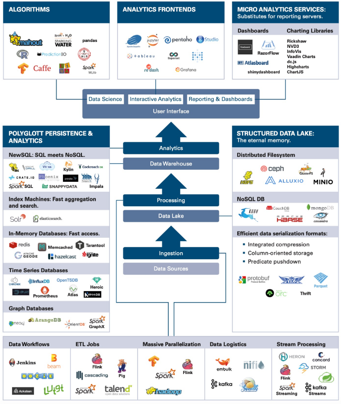
Data Management on…
Most common data management platforms:
- Relational Databases (RDBMS) – Structure-based, SQL support.
- NoSQL – Flexible schema, good for unstructured data.
On-Premises or Cloud-Based
SQL / NoSQL
SQL Databases (relational databases)
- Structured query language
- Suited for structured data
- Relationships and tables
NoSQL Databases (non-relational databases)
- Dynamic schema for unstructured data
- Flexible for creating unique structures
- Unstructured or semi-structured data
- Document, graph, column, KeyValue structures
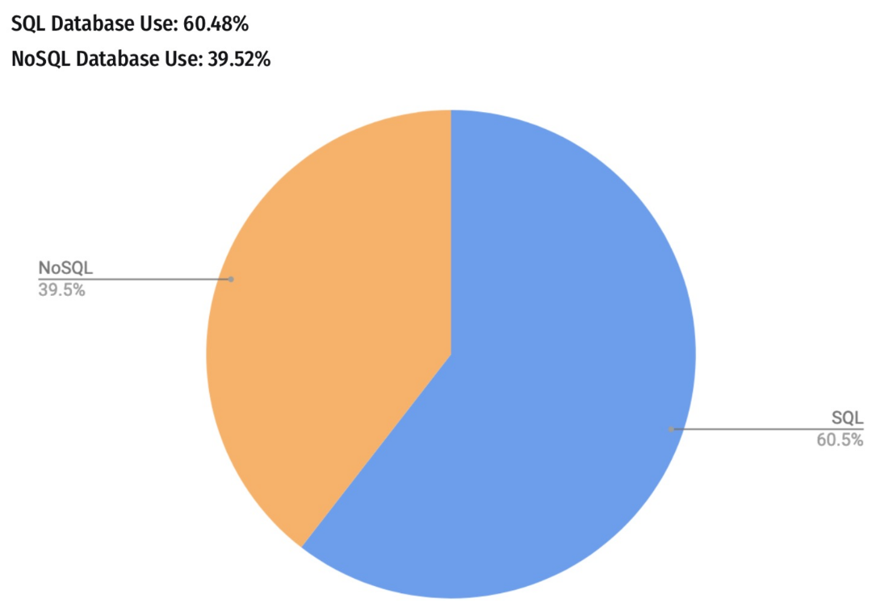
Relational Systems
Advantages of Relational Systems:
- Mature technology:
- Well-defined interfaces (SQL)
- Structured and organized
- Provides meta-data in the form of a schema
- Built-in multi-user synchronization for data integrity
- Good at basic statistics and reporting
- Built-in query processing engines
Object-relational mapping
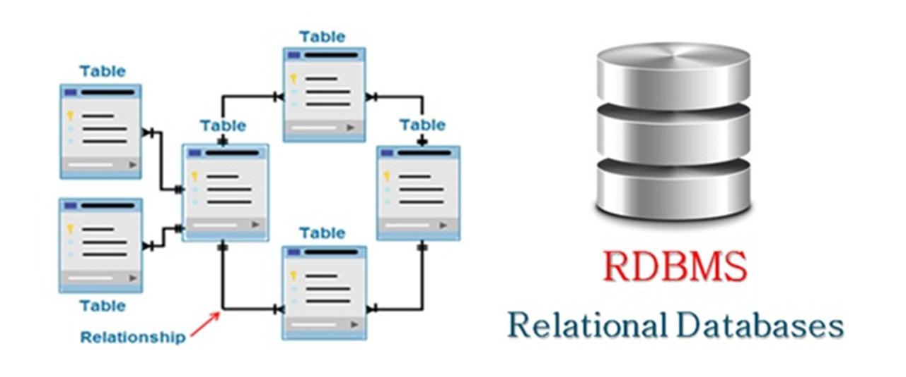SQL Basics
SQL = Structured Query Language
- It is a compact language to express complex questions. For example:
- You don’t need to specify the steps for accomplishing this task (this is an example of declarative programming).
- The SQL runtime decomposes the query into subroutines and picks the best way to execute it (i.e., which subroutine to do first, which second, etc).
Suppose that:
country= {India, …} is of length 1,000,pollutant= {NO2, …} is of length 100,particles= {100, 90, …} is of length 10,000.
Which filter in the WHERE clause would you run first?
The query scheduler takes care of it, we don‘t have to worry about this.
| Country | Pollutant | Particles |
|---|---|---|
| USA | NO2 | 90 |
| USA | CO2 | 100 |
| … | … | … |
| India | NO2 | 200 |
| India | NO2 | 210 |
| India | CO2 | 110 |
| … | … | … |
| Switzerland | CO2 | 20 |
| Switzerland | CO2 | 20 |
| … | … | … |
SQL recap using BigQuery
Practicing SQL with BigQuery
Before to begin:
In the Google Cloud console, select or create a Google Cloud project.
BigQuery has lots of public data available. To access it, click on ADD towards top left:
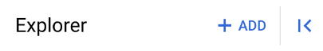Enter “public dataset” in the search bar:
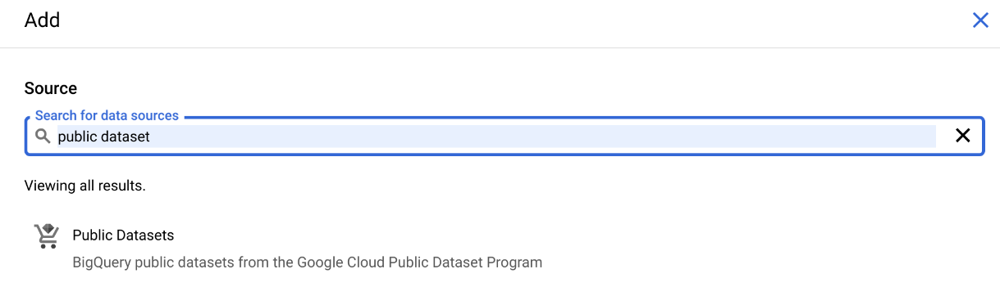
- Then we propose to use the
bigquery-public-data.openaq.global_air_qualitydataset:
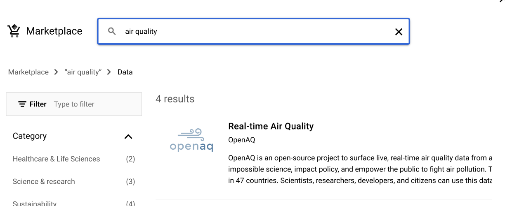
- You can preview the dataset by clicking on the table name:
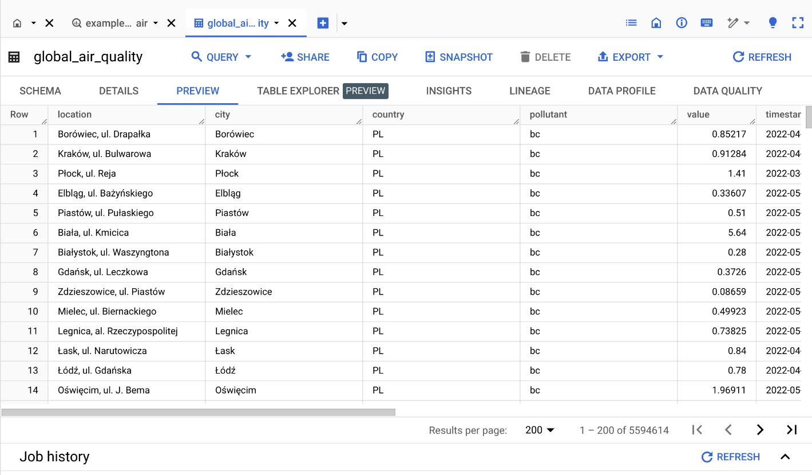
To start querying the dataset, you can click on “Home” button then click on “SQL QUERY”:
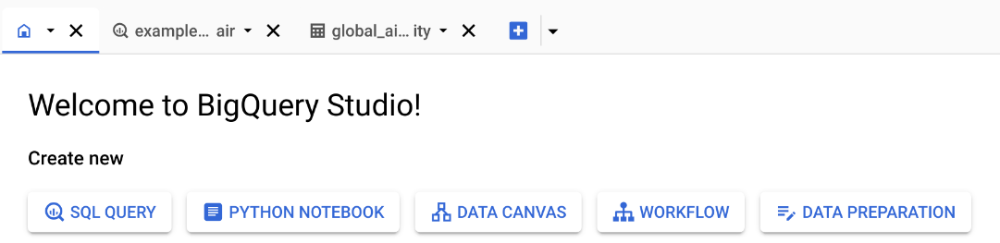Now you write SQL commands in the query windows and click on “RUN” to execute.
Select, From, Where
Asked ChatGPT for comment on SQL query:
SELECT city: Specifies that we want to retrieve only the values in the city column.FROM 'bigquery-public-data.openaq.global_air_quality': Indicates the source table where the data is stored. In this case, it’s the global_air_quality table, which is part of the openaq dataset within bigquery-public-data on Google BigQuery.WHERE country = 'CH': This is a filter condition that limits the results to only those rows where the country column has the value ‘CH’ (the country code for Switzerland).
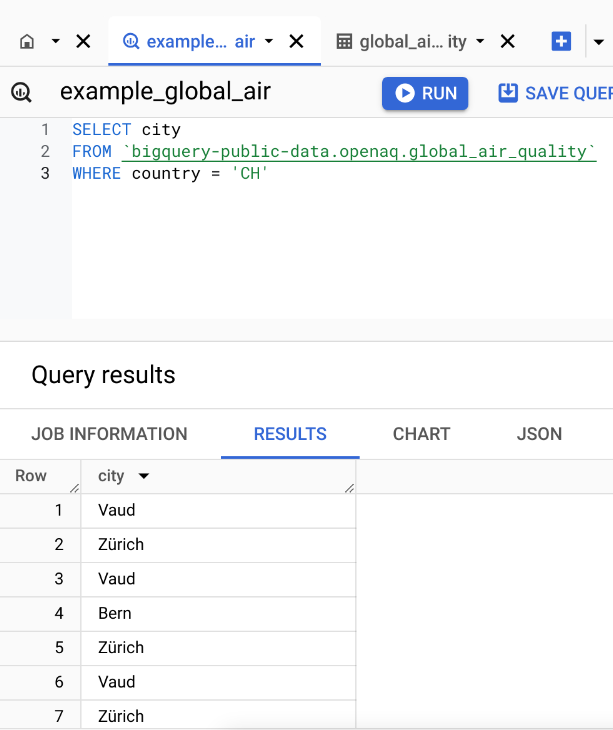
Select, From, Where with Distinct
Filtering with Conditions
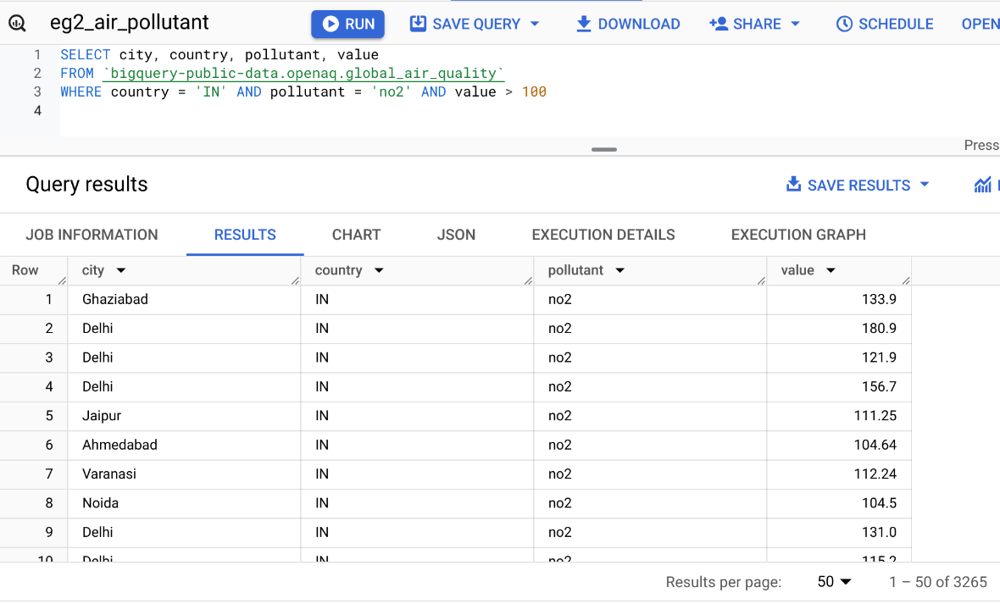Query: Records in India with no2 value more than 100.
LIMIT the Number of Results
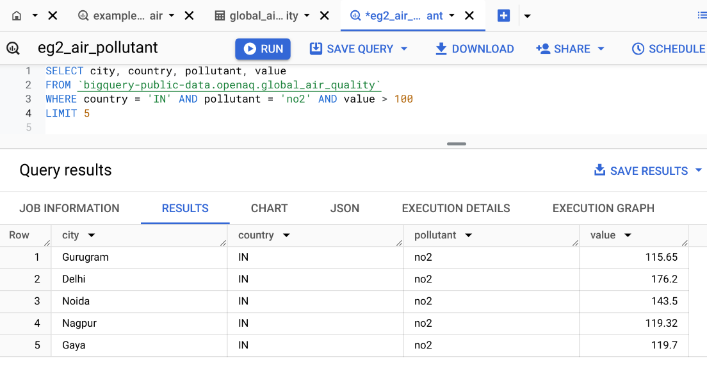Select all columns with *
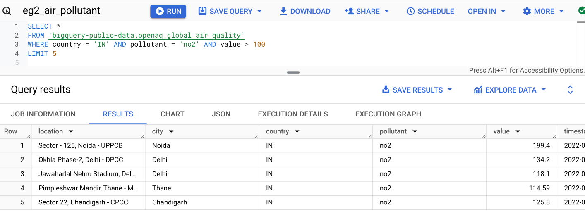Counting Records with COUNT()
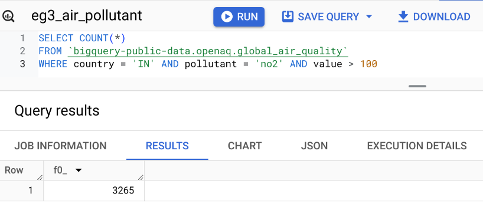Aggregate Functions: MIN(), MAX(), SUM(), AVG()
Query: What is the average no2 pollutant value in US? In India?
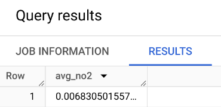
What about Switzerland? What about the max?
WITH Clause
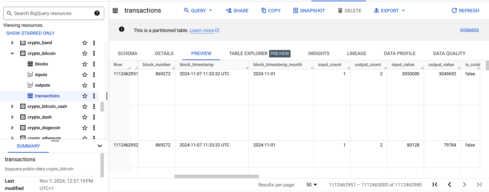Query: Number of bitcoin transactions per date, sorted by date.
Limiting Results with LIMIT
- Sometimes you want to return only part of the results. This can be useful for instance when you run queries on the cloud and you want to preview the results before downloading the entire dataset. LIMIT is used for this purpose. It avoids you pay money for bringing back all the results.
GROUP BY – Operations by Category
Query: What is the average no2 pollutant for each city in the US?
GROUP BY city:
- This groups the results by city. For each unique city in the dataset, the query calculates the average NO2 pollutant value based on the rows that belong to that city.
- Without
GROUP BY, theAVG()function would calculate the average across all rows in the dataset, rather than for each individual city.
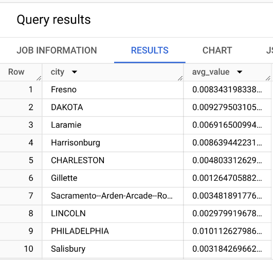
Filtering Categories with GROUP BY and HAVING
Query: Which cities in India have an average no2 pollutant > 50?
Practice Query
Query: What is the average time rent per station of bike share program in San Franciso?
(Look for the San Francisco Bikeshare dataset)
Query: Which day of the week has the most fatal motor accidents in 2020?
(Look for the NHTSA Traffic Fatalities dataset)
Practice Query - Answer from ChatGPT
Query: What is the average time rent per station of bike share program in San Franciso?
SELECT stations.name AS station_name,
AVG(trips.duration_sec / 60) AS avg_rent_time_minutes
FROM `bigquery-public-data.san_francisco.bikeshare_trips` AS trips
JOIN `bigquery-public-data.san_francisco.bikeshare_stations` AS stations
ON trips.start_station_id = stations.station_id
GROUP BY station_name
ORDER BY avg_rent_time_minutes DESC- It uses the
JOINoperation to merge the two tables (we will seeJOINin the next slides). We could simply return the station_id instead. - It uses the
bigquery-public-data.san_franciscoinstead ofbigquery-public-data.san_francisco_bikesharedataset.
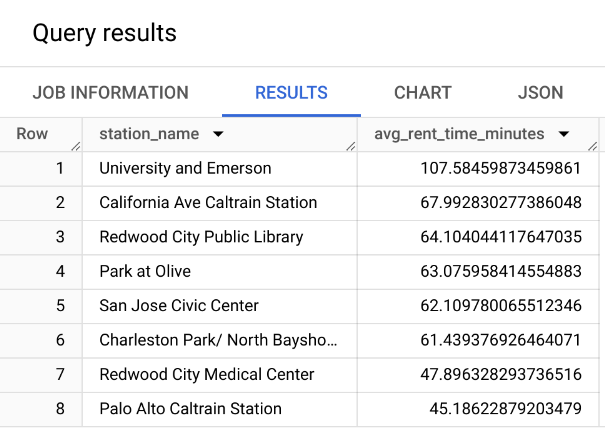
Practice Query - Answer from ChatGPT
Query: Which day of the week has the most fatal motor accidents in 2020?
- Error in the dataset. ChatGPT is not able to type the correct dataset name (even after trying to correct the prompt).
- No need to extract for the year, as the dataset is already filtered for 2020.
- It imposes a limit of 1, but it is not necessary.
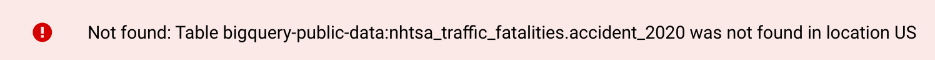
- It uses more advanced SQL commands such as
FORMAT_TIMESTAMP,TIMESTAMPandEXTRACT. These might not always be available in all SQL databases. 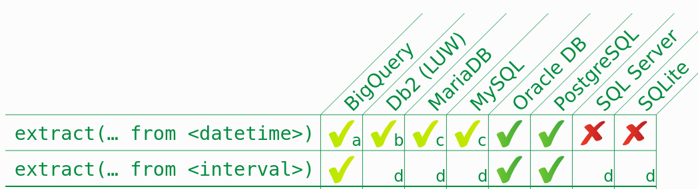
SQL Joins
Joins allow merging results from different tables. It is required to specify the “key” linking the tables.
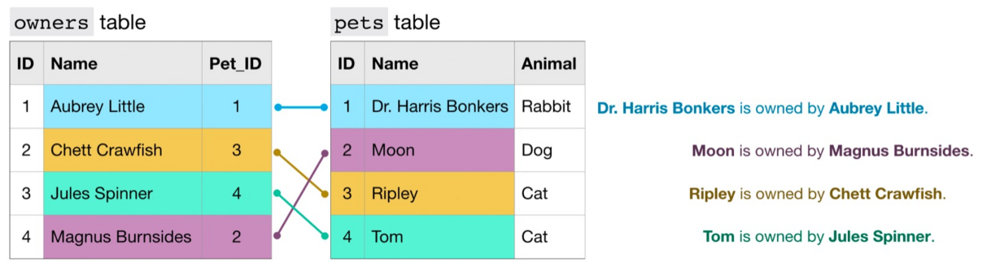Types of Joins
- (INNER) JOIN: Returns records that have matching values in both tables.
- LEFT/RIGHT (OUTER) JOIN: Returns all records from the left/right table and the matched records from the right/left table.
- FULL (OUTER) JOIN: Returns all records when there is a match in either left or right table.
Example INNER JOIN
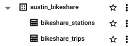Query: Find the top 5 longest bike rides in Austin, including informations about stations.
Which field name should we use to join the two tables?
Example INNER JOIN - option 1
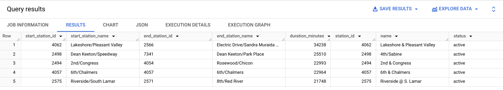
You can simplify the query by using the following syntax:
Example INNER JOIN - option 2
Mini-exercise
Query: Which bike start station has the longest duration rides?
Query: How many bikes were reported as stolen?
Additional SQL Resources
Connecting R to BigQuery
To connect R to BigQuery, use the bigrquery package:
# Install the bigrquery package
install.packages("bigrquery")
# Load the library and authenticate
library(bigrquery)
bq_auth()
# Run a query
query <- "SELECT country, pollutant, value
FROM `bigquery-public-data.openaq.global_air_quality`
WHERE country = 'US'
LIMIT 5"
result <- bq_project_query("your-project-id", query)
data <- bq_table_download(result)
head(data) country pollutant value
1 US no 0.007021218
2 US bc 0.410000000
3 US bc 0.500000000
4 US bc 2.100000000
5 US bc 0.160000000Example - Number of Bitcoin Transactions Over time
query <- "WITH time AS (
SELECT DATE(block_timestamp) AS trans_date
FROM `bigquery-public-data.crypto_bitcoin.transactions`
)
SELECT COUNT(trans_date) AS transactions, trans_date
FROM time
GROUP BY trans_date
ORDER BY trans_date DESC"
result <- bq_project_query("your-project-id", query)
data <- bq_table_download(result)
library(ggplot2)
library(hrbrthemes)
p <- ggplot(data, aes(x=trans_date, y=transactions)) +
geom_line( color="#69b3a2") +
xlab("Time") + ylab("Number of Transactions") +
theme_ipsum() +
theme(axis.text.x=element_text(angle=60, hjust=1)) +
ggtitle("Number of Bitcoin Transactions Over Time")
p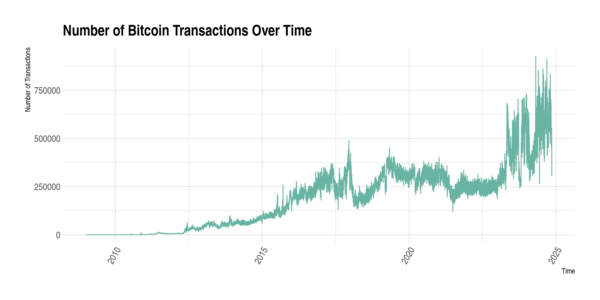
Connecting Python to BigQuery
To connect Python to BigQuery, use the google-cloud-bigquery client.
# TIP: Install once in your env: pip install google-cloud-bigquery pandas pyarrow
# Auth options:
# - gcloud: gcloud auth application-default login
# - or set GOOGLE_APPLICATION_CREDENTIALS to a service-account JSON
from google.cloud import bigquery
import pandas as pd
client = bigquery.Client(project="your-project-id")
# Run a query
query = """
SELECT country, pollutant, value
FROM `bigquery-public-data.openaq.global_air_quality`
WHERE country = 'US'
LIMIT 5
"""
df = client.query(query).to_dataframe()
df.head()Overview of BigQuery
BigQuery is a highly scalable data warehouse designed to store and analyze terabytes of data using SQL.
Benefits:
- High-speed querying over large datasets.
- Scalable storage and computing power.
- Integration with public datasets for broader analysis.
Key Features of BigQuery
- Serverless architecture: You don’t manage infrastructure, it scales automatically.
- SQL-based queries: Standard SQL allows you to extract, transform, and analyze data.
- Built-in machine learning: You can train and deploy machine learning models directly within BigQuery using SQL.
- Integration with R and Python: Use the
bigrquerypackage to connect R with BigQuery orgoogle-cloud-bigqueryfor Python.
Local SQL practice
Mini database (SQLite)
We will create a small customers–orders database to practice.
library(DBI); library(RSQLite)
con <- dbConnect(SQLite(), ":memory:")
DBI::dbExecute(con, "
CREATE TABLE customers (
customer_id INTEGER PRIMARY KEY,
name TEXT NOT NULL,
country TEXT NOT NULL
);
")
DBI::dbExecute(con, "
CREATE TABLE orders (
order_id INTEGER PRIMARY KEY,
customer_id INTEGER NOT NULL,
order_date TEXT NOT NULL, -- ISO8601
amount REAL NOT NULL,
FOREIGN KEY(customer_id) REFERENCES customers(customer_id)
);
")
DBI::dbWriteTable(con, "customers",
data.frame(customer_id=1:5,
name=c("Ada","Bruno","Chloé","Dinesh","Elena"),
country=c("CH","FR","CH","IN","US")),
append=TRUE)
DBI::dbWriteTable(con, "orders",
data.frame(order_id=1:10,
customer_id=c(1,1,2,3,3,3,4,4,5,5),
order_date=as.character(as.Date("2025-09-20") + c(0,1,0,2,5,6,1,7,3,9)),
amount=c(120,75,300,42,88,150,60,500,20,220)),
append=TRUE)
DBI::dbListTables(con)import sqlite3, pandas as pd, datetime as dt
con = sqlite3.connect(":memory:")
cur = con.cursor()
cur.execute("""
CREATE TABLE customers (
customer_id INTEGER PRIMARY KEY,
name TEXT NOT NULL,
country TEXT NOT NULL
);
""")
cur.execute("""
CREATE TABLE orders (
order_id INTEGER PRIMARY KEY,
customer_id INTEGER NOT NULL,
order_date TEXT NOT NULL,
amount REAL NOT NULL,
FOREIGN KEY(customer_id) REFERENCES customers(customer_id)
);
""")
customers = pd.DataFrame({
"customer_id": [1,2,3,4,5],
"name": ["Ada","Bruno","Chloé","Dinesh","Elena"],
"country": ["CH","FR","CH","IN","US"]
})
orders = pd.DataFrame({
"order_id": range(1,11),
"customer_id": [1,1,2,3,3,3,4,4,5,5],
"order_date": [(dt.date(2025,9,20)+dt.timedelta(days=d)).isoformat() for d in [0,1,0,2,5,6,1,7,3,9]],
"amount": [120,75,300,42,88,150,60,500,20,220]
})
customers.to_sql("customers", con, if_exists="append", index=False)
orders.to_sql("orders", con, if_exists="append", index=False)
con.execute("SELECT name FROM sqlite_master WHERE type='table'").fetchall()SQL basics
SELECT specific columns → WHERE to filter → ORDER BY to sort → LIMIT to preview.
Tip: Start with
SELECT * ... LIMIT 5to inspect shape without scanning the full table.
Aggregation: GROUP BY & HAVING
Rules: every selected non-aggregated column must appear in GROUP BY. Use HAVING to filter groups.
JOINS (visual intuition)
- INNER JOIN: only matching rows
- LEFT JOIN: all left + matches from right
- FULL OUTER JOIN: all rows from both (not in SQLite; emulate with
UNION) - JOIN keys should be indexed in larger DBs; ensure uniqueness/NOT NULL on IDs
Accessing SQL from R
Accessing SQL from Python
In‑class mini‑exercises
- Warm‑up: Write a query to list CH customers ordered by name. Add
LIMIT 3. - Aggregation: Average order amount per customer; return top 3 customers.
- Join logic: Find customers with no orders using a
LEFT JOIN.
Cheat‑sheet
SELECT col1, col2 FROM t WHERE cond ORDER BY col1 DESC LIMIT n;JOIN:A JOIN B ON A.key = B.key· left join keeps all of A- Aggregation:
GROUP BY cols+HAVINGto filter groups - R:
DBI::dbGetQuery(con, sql); Python:pd.read_sql_query(sql, con)
API
OpenWeatherMap (current weather)
Create a free key (account on openweathermap.org).
Try this URL in your browser (replace
YOUR_KEY):
https://api.openweathermap.org/data/2.5/weather?q=Lausanne&units=metric&appid=YOUR_KEY- Look for fields like
main.temp,weather.description,wind.speedin the JSON.
R: OpenWeatherMap → JSON to tibble
# packages
library(httr2)
library(dplyr)
# store your key in an env var before class: Sys.setenv(OPENWEATHERMAP_API_KEY="...")
okey <- Sys.getenv("OPENWEATHERMAP_API_KEY")
resp <- request("https://api.openweathermap.org/data/2.5/weather") |>
req_url_query(q = "Lausanne", units = "metric", appid = okey) |>
req_perform()
wx <- resp_body_json(resp, simplifyVector = TRUE)
# extract a compact summary row
wx_row <- tibble::tibble(
city = wx$name,
country = wx$sys$country,
temperature = wx$main$temp,
feels_like = wx$main$feels_like,
humidity = wx$main$humidity,
wind_ms = wx$wind$speed,
condition = wx$weather$description,
timestamp = as.POSIXct(wx$dt, origin = "1970-01-01", tz = "UTC")
)
wx_row# A tibble: 1 × 8
city country temperature feels_like humidity wind_ms condition
<chr> <chr> <dbl> <dbl> <int> <dbl> <chr>
1 Lausanne CH 11.7 10.8 70 0.72 overcast clouds
# ℹ 1 more variable: timestamp <dttm>Python: OpenWeatherMap → JSON to DataFrame
import os, requests, pandas as pd
okey = os.environ.get("OPENWEATHERMAP_API_KEY")
params = {"q": "Lausanne", "units": "metric", "appid": okey}
r = requests.get("https://api.openweathermap.org/data/2.5/weather", params=params)
wx = r.json()
row = {
"city": wx.get("name"),
"country": wx.get("sys", {}).get("country"),
"temperature": wx.get("main", {}).get("temp"),
"feels_like": wx.get("main", {}).get("feels_like"),
"humidity": wx.get("main", {}).get("humidity"),
"wind_ms": wx.get("wind", {}).get("speed"),
"condition": (wx.get("weather", {}).get("description"),
}
pd.DataFrame([row])Alpha Vantage (stocks)
- Uses an API key. Demo key available for specific symbols.
- Paste in your browser (works without signing up):
https://www.alphavantage.co/query?function=TIME_SERIES_DAILY&symbol=MSFT&apikey=demo- The JSON contains a nested object
Time Series (Daily)with open, high, low, close, volume by date.
R: Alpha Vantage → tidy daily prices
library(httr2)
library(purrr)
library(dplyr)
akey <- Sys.getenv("ALPHAVANTAGE_API_KEY", unset = "demo")
resp <- request("https://www.alphavantage.co/query") |>
req_url_query(`function` = "TIME_SERIES_DAILY", symbol = "MSFT", apikey = akey) |>
req_perform()
js <- resp_body_json(resp, simplifyVector = TRUE)
daily <- js[["Time Series (Daily)"]]
prices <- imap_dfr(daily, ~ tibble::tibble(
date = as.Date(.y),
open = as.numeric(.x[["1. open"]]),
high = as.numeric(.x[["2. high"]]),
low = as.numeric(.x[["3. low"]]),
close = as.numeric(.x[["4. close"]]),
volume = as.numeric(.x[["5. volume"]])
)) |>
arrange(date)
prices# A tibble: 100 × 6
date open high low close volume
<date> <dbl> <dbl> <dbl> <dbl> <dbl>
1 2025-06-16 475. 481. 475 479. 15626104
2 2025-06-17 475. 479. 474. 478. 15414128
3 2025-06-18 478 481 474. 480. 17526452
4 2025-06-20 482. 483. 477. 477. 37576206
5 2025-06-23 478. 488. 473. 486 24863952
6 2025-06-24 489. 492. 487. 490. 22305642
7 2025-06-25 492. 495. 489. 492. 17495099
8 2025-06-26 493. 498. 493. 497. 21578853
9 2025-06-27 498. 499. 493. 496. 34539236
10 2025-06-30 497. 501. 495. 497. 28368991
# ℹ 90 more rowsPython: Alpha Vantage → tidy daily prices
import os, requests, pandas as pd
akey = os.environ.get("ALPHAVANTAGE_API_KEY", "demo")
params = {"function": "TIME_SERIES_DAILY", "symbol": "MSFT", "apikey": akey}
r = requests.get("https://www.alphavantage.co/query", params=params)
js = r.json()
daily = js.get("Time Series (Daily)", {})
df = (pd.DataFrame(daily).T
.rename(columns={
"1. open":"open","2. high":"high","3. low":"low",
"4. close":"close","5. volume":"volume"
})
.reset_index(names="date"))
df["date"] = pd.to_datetime(df["date"]).dt.date
df.sort_values("date").head()OMDb (movies)
Search for a title + year (replace YOUR_KEY):
https://www.omdbapi.com/?apikey=YOUR_KEY&s=titanic&y=1997Then open details by IMDb id (Titanic):
https://www.omdbapi.com/?apikey=YOUR_KEY&i=tt0120338Look for fields like Title, Year, Genre, Director, imdbRating.
R: OMDb search + details
library(httr2)
mkey <- Sys.getenv("OMDB_API_KEY")
# Search first
s <- request("https://www.omdbapi.com/") |>
req_url_query(apikey = mkey, s = "titanic", y = 1997) |>
req_perform() |>
resp_body_json(simplifyVector = TRUE)
head(s$Search)
# Then fetch details by IMDb id
movie <- request("https://www.omdbapi.com/") |>
req_url_query(apikey = mkey, i = "tt0120338") |>
req_perform() |>
resp_body_json(simplifyVector = TRUE)
unlist(movie[c("Title","Year","Genre","Director","imdbRating")])Python: OMDb search + details
import os, requests, pandas as pd
mkey = os.environ.get("OMDB_API_KEY")
# Search
s = requests.get("https://www.omdbapi.com/", params={"apikey": mkey, "s": "titanic", "y": 1997}).json()
pd.DataFrame(s.get("Search", []))
# Details
movie = requests.get("https://www.omdbapi.com/", params={"apikey": mkey, "i": "tt0120338"}).json()
{ k: movie.get(k) for k in ["Title","Year","Genre","Director","imdbRating"] }Wikipedia pageviews
import requests, datetime
import pandas as pd
yesterday = (datetime.date.today() - datetime.timedelta(days=1))
url = (
f"https://wikimedia.org/api/rest_v1/metrics/pageviews/top/"
f"en.wikipedia/all-access/{yesterday.year}/{yesterday:%m}/{yesterday:%d}"
)
resp = requests.get(url)
items = resp.json()["items"][0]["articles"]
# Build DataFrame and keep top 10
(df := pd.DataFrame(items))[['article','views']].head(10)Translation with Deepl
This is what we obtain on Google translate:
But what a good translation of the name of a pipe!
API Example: ChatGPT
# Requires: pip install openai
import os
from openai import OpenAI
client = OpenAI(api_key=os.environ.get("OPENAI_API_KEY"))
resp = client.chat.completions.create(
model="gpt-4o-mini",
messages=[
{"role":"system","content":"You are a helpful assistant."},
{"role":"user","content":"What do you think about the Programming Tools in Data Science class in R?"}
]
)
print(resp.choices[0].message.content)Your turn (5–8 minutes)
- Generate a browser URL for a city of your choice in OpenWeatherMap.
- Use OMDb to search your favorite movie and open its details page.
- (Stretch) Replace
MSFTwith another symbol in Alpha Vantage and fetch the JSON.
Bonus: Copy one of the R/Python snippets, set your env var locally, and print 3 fields.
Keeping API keys safe (class‑friendly)
Never hard‑code secrets in slides, repos, or notebooks.
Prefer environment variables:
- R:
~/.Renviron→OPENWEATHER_API_KEY=... - Python: set in shell before launch, or use
.env+python-dotenvlocally.
- R:
Rotate / revoke keys if you accidentally leak them.
Watch the rate limits (Alpha Vantage is strict); implement simple retries if needed.
Cheat‑sheet: env vars
macOS/Linux (bash/zsh)
Windows (PowerShell)
R session
Python session
API
- Application Programming Interface are gold standard for fetching data from the web
- Data is fetched by directly posing HTTP requests.
- Data requests from
Rusinglibrary(httr)or API wrappers. - Data fetched through the API is generally more reliable.
What’s an HTTP API
- A URL endpoint (e.g.,
https://api.example.com/resource). - A method (GET for reading, POST for creating, …).
- Query parameters (e.g.,
?q=Lausanne&units=metric). - Often requires an API key (auth & rate limits).
- Returns JSON most of the time.
API
API = Application Programming Interface — structured endpoints to request data.
Pros
- Stable schema
- Pagination, filters
- Legal & documented
- Fewer scraping breakages
Cons
- Registration/API key
- Rate limits/quotas
- Not all data exposed
Webscraping
Webscraping
- If API is not available, e.g. there is no libraries, you could try to build your own API by following for example this tutorial or that one (not covered in this class).
- Instead, we discuss webscraping, a method that is effective regardless of whether a website offers an API.
When scraping is needed
If no API or missing fields → parse the HTML.
- Fetch page (respect robots & rate limits)
- Parse DOM
- Select nodes (CSS selectors)
- Extract text/attributes
Webscraping - a first example
HTTP request/response cycle

Scraping?
HyperText Markup Language
<!DOCTYPE html>
<html>
<body>
<h1 id='first'>Webscraping with R</h1>
<p> Basic experience with <a href="www.r-project.org">R</a> and
familiarity with the <em>Tidyverse</em> is recommended.</p>
<h2>Technologies</h2>
<ol>
<li>HTML: <em>Hypertext Markup Language</em></li>
<li>CSS: <em>Cascading Style Sheets</em></li>
</ol>
<h2>Packages</h2>
<ul>
<a href="https://github.com/tidyverse/rvest"><li>rvest</li></a>
</ul>
<p><strong>Note</strong>:
<em>rvest</em> is included in the <em>tidyverse</em></p>
</body>
</html>HTML
- element starts with
<tag>and ends</tag>, - it has optional attributes (
id=attribute), - content is everything between two tags.
- For example, add the attribute
style="background-color:DodgerBlue;"toh1and try it.
HTML elements
| tag | meaning |
|---|---|
| p | Paragraph |
| h1 | Top-level heading |
| h2, h3, … | Lower level headings |
| ol | Ordered list |
| ul | Unorder list |
| li | List item |
| img | Image |
| a | Anchor (Hyperlink) |
| div | Section wrapper (block-level) |
| span | Text wrapper (in-line) |
Data extraction
Create a minimal HTML page for experimenting
html_page <- minimal_html('
<body>
<h1>Webscraping with R</h1>
<p> Basic experience with <a href="www.r-project.org">R</a> and
familiarity with the <em>Tidyverse</em> is recommended.</p>
<h2>Technologies</h2>
<ol>
<li>HTML: <em>Hypertext Markup Language</em></li>
<li>CSS: <em>Cascading Style Sheets</em></li>
</ol>
<h2>Packages</h2>
<ul>
<a href="https://github.com/tidyverse/rvest"><li>rvest</li></a>
</ul>
<p><strong>Note</strong>:
<em>rvest</em> is included in the <em>tidyverse</em></p>
</body>')from bs4 import BeautifulSoup
html_page = BeautifulSoup('''
<body>
<h1>Webscraping with R</h1>
<p> Basic experience with <a href="www.r-project.org">R</a> and
familiarity with the <em>Tidyverse</em> is recommended.</p>
<h2>Technologies</h2>
<ol>
<li>HTML: <em>Hypertext Markup Language</em></li>
<li>CSS: <em>Cascading Style Sheets</em></li>
</ol>
<h2>Packages</h2>
<ul>
<a href="https://github.com/tidyverse/rvest"><li>rvest</li></a>
</ul>
<p><strong>Note</strong>:
<em>rvest</em> is included in the <em>tidyverse</em></p>
</body>''', 'html.parser')Example: list item (li)
Example: heading of order 2 (h2)
Example: emphasized text (em)
<p> Basic experience with <a href="www.r-project.org">R</a> and
familiarity with the <em>Tidyverse</em> is recommended.</p>
<h2>Technologies</h2>
<ol>
<li>HTML: <em>Hypertext Markup Language</em></li>
<li>CSS: <em>Cascading Style Sheets</em></li>
</ol>
<h2>Packages</h2>
<ul>
<a href="https://github.com/tidyverse/rvest"><li>rvest</li></a>
</ul>
<p><strong>Note</strong>:
<em>rvest</em> is included in the <em>tidyverse</em></p>Cascading Style Sheets (CSS)
- CSS is used to specify the style (appearance, arrangement and variations) of your web pages.
CSS selectors cheat‑sheet
| selector | meaning |
|---|---|
tag |
element by tag |
.class |
by class |
#id |
by id |
a[href] |
attribute present |
a[href*="wiki"] |
attr contains |
parent > child |
direct child |
A + B |
adjacent sibling |
A ~ B |
any following sibling |
:first-child, :nth-child(2) |
structural pseudo‑classes |
:not(X) |
negation |
CSS Selector: grouping (,)
- The grouping selector selects all the HTML elements with the same style definitions.
- For example,
div, pselects all<div>elements and all<em>elements.
Example: grouping li and em
<p> Basic experience with <a href="www.r-project.org">R</a> and
familiarity with the <em>Tidyverse</em> is recommended.</p>
<h2>Technologies</h2>
<ol>
<li>HTML: <em>Hypertext Markup Language</em></li>
<li>CSS: <em>Cascading Style Sheets</em></li>
</ol>
<h2>Packages</h2>
<ul>
<a href="https://github.com/tidyverse/rvest"><li>rvest</li></a>
</ul>
<p><strong>Note</strong>:
<em>rvest</em> is included in the <em>tidyverse</em></p>Example: grouping li and em
<p> Basic experience with <a href="www.r-project.org">R</a> and
familiarity with the <em>Tidyverse</em> is recommended.</p>
<h2>Technologies</h2>
<ol>
<li>HTML: <em>Hypertext Markup Language</em></li>
<li>CSS: <em>Cascading Style Sheets</em></li>
</ol>
<h2>Packages</h2>
<ul>
<a href="https://github.com/tidyverse/rvest"><li>rvest</li></a>
</ul>
<p><strong>Note</strong>:
<em>rvest</em> is included in the <em>tidyverse</em></p> #<<CSS Selector: descendant selector (space)
- The descendant selector matches all elements that are descendants of a specified element.
- For example,
div pselects all<p>elements inside<div>elements.
Example: all em that are descendants of li
<p> Basic experience with <a href="www.r-project.org">R</a> and
familiarity with the <em>Tidyverse</em> is recommended.</p>
<h2>Technologies</h2>
<ol>
<li>HTML: <em>Hypertext Markup Language</em></li>
<li>CSS: <em>Cascading Style Sheets</em></li>
</ol>
<h2>Packages</h2>
<ul>
<a href="https://github.com/tidyverse/rvest"><li>rvest</li></a>
</ul>
<p><strong>Note</strong>:
<em>rvest</em> is included in the <em>tidyverse</em></p>Example: all em that are descendants of li
<p> Basic experience with <a href="www.r-project.org">R</a> and
familiarity with the <em>Tidyverse</em> is recommended.</p>
<h2>Technologies</h2>
<ol>
<li>HTML: <em>Hypertext Markup Language</em></li>
<li>CSS: <em>Cascading Style Sheets</em></li>
</ol>
<h2>Packages</h2>
<ul>
<a href="https://github.com/tidyverse/rvest"><li>rvest</li></a>
</ul>
<p><strong>Note</strong>:
<em>rvest</em> is included in the <em>tidyverse</em></p>CSS Selector: child selector (>)
- The child selector selects all elements that are the children of a specified element.
- For example,
div > pselects all<p>elements that are children of a<div>element.
Example: all em that are children of p
<p> Basic experience with <a href="www.r-project.org">R</a> and
familiarity with the <em>Tidyverse</em> is recommended.</p>
<h2>Technologies</h2>
<ol>
<li>HTML: <em>Hypertext Markup Language</em></li>
<li>CSS: <em>Cascading Style Sheets</em></li>
</ol>
<h2>Packages</h2>
<ul>
<a href="https://github.com/tidyverse/rvest"><li>rvest</li></a>
</ul>
<p><strong>Note</strong>:
<em>rvest</em> is included in the <em>tidyverse</em></p>Example: all em that are children of p
<p> Basic experience with <a href="www.r-project.org">R</a> and
familiarity with the <em>Tidyverse</em> is recommended.</p>
<h2>Technologies</h2>
<ol>
<li>HTML: <em>Hypertext Markup Language</em></li>
<li>CSS: <em>Cascading Style Sheets</em></li>
</ol>
<h2>Packages</h2>
<ul>
<a href="https://github.com/tidyverse/rvest"><li>rvest</li></a>
</ul>
<p><strong>Note</strong>:
<em>rvest</em> is included in the <em>tidyverse</em></p>CSS Selector: adjacent sibling selector (+)
- The adjacent sibling selector is used to select an element that is directly after another specific element.
- Sibling elements must have the same parent element, and “adjacent” means “immediately following”.
- For example,
div + pselects the first<p>element that is situated immediately after<div>elements.
Example: em immediately after p
<p> Basic experience with <a href="www.r-project.org">R</a> and
familiarity with the <em>Tidyverse</em> is recommended.</p>
<h2>Technologies</h2>
<ol>
<li>HTML: <em>Hypertext Markup Language</em></li>
<li>CSS: <em>Cascading Style Sheets</em></li>
</ol>
<h2>Packages</h2>
<ul>
<a href="https://github.com/tidyverse/rvest"><li>rvest</li></a>
</ul>
<p><strong>Note</strong>:
<em>rvest</em> is included in the <em>tidyverse</em></p>Example: em immediately after p
<p> Basic experience with <a href="www.r-project.org">R</a> and
familiarity with the <em>Tidyverse</em> is recommended.</p>
<h2>Technologies</h2>
<ol>
<li>HTML: <em>Hypertext Markup Language</em></li>
<li>CSS: <em>Cascading Style Sheets</em></li>
</ol>
<h2>Packages</h2>
<ul>
<a href="https://github.com/tidyverse/rvest"><li>rvest</li></a>
</ul>
<p><strong>Note</strong>:
<em>rvest</em> is included in the <em>tidyverse</em></p>No em are immediately after p.
Example: em immediately after em
<p> Basic experience with <a href="www.r-project.org">R</a> and
familiarity with the <em>Tidyverse</em> is recommended.</p>
<h2>Technologies</h2>
<ol>
<li>HTML: <em>Hypertext Markup Language</em></li>
<li>CSS: <em>Cascading Style Sheets</em></li>
</ol>
<h2>Packages</h2>
<ul>
<a href="https://github.com/tidyverse/rvest"><li>rvest</li></a>
</ul>
<p><strong>Note</strong>:
<em>rvest</em> is included in the <em>tidyverse</em></p>Example: em immediately after em
<p> Basic experience with <a href="www.r-project.org">R</a> and
familiarity with the <em>Tidyverse</em> is recommended.</p>
<h2>Technologies</h2>
<ol>
<li>HTML: <em>Hypertext Markup Language</em></li>
<li>CSS: <em>Cascading Style Sheets</em></li>
</ol>
<h2>Packages</h2>
<ul>
<a href="https://github.com/tidyverse/rvest"><li>rvest</li></a>
</ul>
<p><strong>Note</strong>:
<em>rvest</em> is included in the <em>tidyverse</em></p>CSS Selector: general sibling selector (~)
- The general sibling selector selects all elements that are next siblings of a specified element.
- Sibling elements must have the same parent element, and “general” means “any place”.
- For example,
div ~ pselects all<p>elements that are preceded by a<div>element.
Example: em next sibling of a
<p> Basic experience with <a href="www.r-project.org">R</a> and
familiarity with the <em>Tidyverse</em> is recommended.</p>
<h2>Technologies</h2>
<ol>
<li>HTML: <em>Hypertext Markup Language</em></li>
<li>CSS: <em>Cascading Style Sheets</em></li>
</ol>
<h2>Packages</h2>
<ul>
<a href="https://github.com/tidyverse/rvest"><li>rvest</li></a>
</ul>
<p><strong>Note</strong>:
<em>rvest</em> is included in the <em>tidyverse</em></p>Example: em next sibling of a
<p> Basic experience with <a href="www.r-project.org">R</a> and
familiarity with the <em>Tidyverse</em> is recommended.</p>
<h2>Technologies</h2>
<ol>
<li>HTML: <em>Hypertext Markup Language</em></li>
<li>CSS: <em>Cascading Style Sheets</em></li>
</ol>
<h2>Packages</h2>
<ul>
<a href="https://github.com/tidyverse/rvest"><li>rvest</li></a>
</ul>
<p><strong>Note</strong>:
<em>rvest</em> is included in the <em>tidyverse</em></p>(Here, we would have obtained the same result with a + em)
CSS Selector: first child selector (:first-child)
:first-childselects the specified element that is the first child of another element.- For example,
p:first-childselects all<p>elements that are the first child of any other element.
Example: all li that are first children
<p> Basic experience with <a href="www.r-project.org">R</a> and
familiarity with the <em>Tidyverse</em> is recommended.</p>
<h2>Technologies</h2>
<ol>
<li>HTML: <em>Hypertext Markup Language</em></li>
<li>CSS: <em>Cascading Style Sheets</em></li>
</ol>
<h2>Packages</h2>
<ul>
<a href="https://github.com/tidyverse/rvest"><li>rvest</li></a>
</ul>
<p><strong>Note</strong>:
<em>rvest</em> is included in the <em>tidyverse</em></p>Example: all li that are first children
<p> Basic experience with <a href="www.r-project.org">R</a> and
familiarity with the <em>Tidyverse</em> is recommended.</p>
<h2>Technologies</h2>
<ol>
<li>HTML: <em>Hypertext Markup Language</em></li>
<li>CSS: <em>Cascading Style Sheets</em></li>
</ol>
<h2>Packages</h2>
<ul>
<a href="https://github.com/tidyverse/rvest"><li>rvest</li></a>
</ul>
<p><strong>Note</strong>:
<em>rvest</em> is included in the <em>tidyverse</em></p>CSS Selector: nth child selector (:nth-child(n))
- Remark:
:last-childis completely symmetric to:first-child. :nth-child(n)selects the specified element that is the nth child of another element.- For example,
p:nth-child(2)selects all<p>elements that are the second child of any other element.
Example: all li that are second children
<p> Basic experience with <a href="www.r-project.org">R</a> and
familiarity with the <em>Tidyverse</em> is recommended.</p>
<h2>Technologies</h2>
<ol>
<li>HTML: <em>Hypertext Markup Language</em></li>
<li>CSS: <em>Cascading Style Sheets</em></li>
</ol>
<h2>Packages</h2>
<ul>
<a href="https://github.com/tidyverse/rvest"><li>rvest</li></a>
</ul>
<p><strong>Note</strong>:
<em>rvest</em> is included in the <em>tidyverse</em></p>Example: all li that are second children
<p> Basic experience with <a href="www.r-project.org">R</a> and
familiarity with the <em>Tidyverse</em> is recommended.</p>
<h2>Technologies</h2>
<ol>
<li>HTML: <em>Hypertext Markup Language</em></li>
<li>CSS: <em>Cascading Style Sheets</em></li>
</ol>
<h2>Packages</h2>
<ul>
<a href="https://github.com/tidyverse/rvest"><li>rvest</li></a>
</ul>
<p><strong>Note</strong>:
<em>rvest</em> is included in the <em>tidyverse</em></p>HTML attributes
- All HTML elements can have attributes, additional information about elements.
- Attributes are always specified in the start tag, usually in the format
name="value". - For example,
<a href="www.r-project.org">R</a>,hrefis an attribute ofathat specifies an url. - Attributes can be accessed with
html_attrcommand.
Example: href attributes
<p> Basic experience with <a href="www.r-project.org">R</a> and
familiarity with the <em>Tidyverse</em> is recommended.</p>
<h2>Technologies</h2>
<ol>
<li>HTML: <em>Hypertext Markup Language</em></li>
<li>CSS: <em>Cascading Style Sheets</em></li>
</ol>
<h2>Packages</h2>
<ul>
<a href="https://github.com/tidyverse/rvest"><li>rvest</li></a>
</ul>
<p><strong>Note</strong>:
<em>rvest</em> is included in the <em>tidyverse</em></p>Example: href attributes
<p> Basic experience with <a href="www.r-project.org">R</a> and
familiarity with the <em>Tidyverse</em> is recommended.</p>
<h2>Technologies</h2>
<ol>
<li>HTML: <em>Hypertext Markup Language</em></li>
<li>CSS: <em>Cascading Style Sheets</em></li>
</ol>
<h2>Packages</h2>
<ul>
<a href="https://github.com/tidyverse/rvest"><li>rvest</li></a>
</ul>
<p><strong>Note</strong>:
<em>rvest</em> is included in the <em>tidyverse</em></p>HTML tables
| tag | meaning |
|---|---|
| table | Table section |
| tr | Table row |
| td | Table cell |
| th | Table header |
- Tables can be fetched by using the command
html_table()
from bs4 import BeautifulSoup
import pandas as pd
basic_table_html = '''
<body>
<table>
<tr>
<th>Month</th>
<th>Savings</th>
</tr>
<tr>
<td>January</td>
<td>$100</td>
</tr>
<tr>
<td>February</td>
<td>$80</td>
</tr>
</table>
</body>
'''
soup = BeautifulSoup(basic_table_html, 'html.parser')
pd.read_html(str(soup))[0]Example: Wikipedia table
- We would like to fetch the table with Qualified teams of the Rugby World Cup 2023 on Wikipedia.
- A first solution: fetch all tables and select the correct one.
Example: Wikipedia table
- Inspect the HTML with the developer tools.
Example: Wikipedia table
- A better solution using CSS selectors: using the class selector (
.). - Select
class="wikitable".
Example: Wikipedia table
- A better solution using CSS selectors: using the class selector (
.). - Select
class="wikitable sortable".
Example: Wikipedia table
- An alternative solution: select
tableimmediately after fourp.
Why web scraping could be bad?
- Scraping increases web traffic.
- People ignore and violate
robots.txtand Terms of Service (ToS) of websites. - You should avoid those troubles by following these simple rules:
- Read ToS of the website you want to scrap.
- Inspect
robots.txt(see https://cran.r-project.org/robots.txt for instance). - Use a reasonable frequency of requests (force your program to make some pauses).
Respect robots, be polite
- Check robots.txt and TOS
- Identify yourself via User‑Agent
- Add random delays and exponential backoff
- Cache responses during development
import time, random, requests
from urllib import robotparser
from tenacity import retry, wait_exponential, stop_after_attempt
import requests_cache
rp = robotparser.RobotFileParser()
rp.set_url("https://en.wikipedia.org/robots.txt"); rp.read()
rp.can_fetch("DaCM-course", "https://en.wikipedia.org/wiki/Main_Page")
session = requests_cache.CachedSession("scrape_cache", expire_after=3600)
@retry(wait=wait_exponential(multiplier=1, min=1, max=30), stop=stop_after_attempt(5))
def get(url):
time.sleep(random.uniform(0.5,1.5))
return session.get(url, headers={"User-Agent":"DaCM-course/1.0"}, timeout=20)
resp = get("https://httpbin.org/get")
resp.json()Dynamic sites (advanced)
- Sometimes, what you see in your browser is not what is returned by
read_html(). In many cases, this is due to website that employs methods for dynamic data requests. - A solution is to simulate a browser to cope with dynamically rendered webpages.
- Selenium offers a solution. It is a project focused on automating web browsers.
- You have access to Selenium with the
RSeleniumpackage. - An alternative is the
chromotepackage (developped by Posit) that focuses on Chrome DevTools Protocol.
World bank data
World bank data
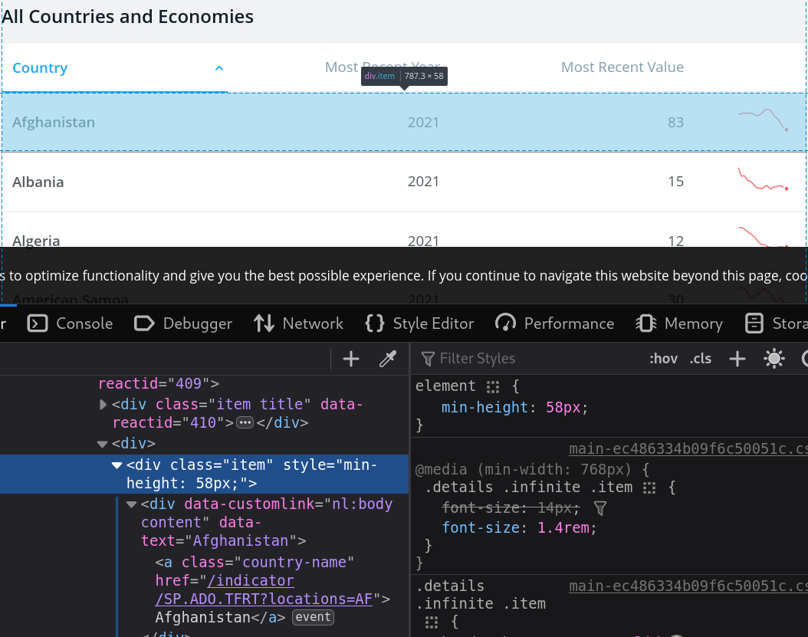World bank data
- Trying to fetch the data non-dynamically using
class="item".
- Only the header is returned.
# Only header-like elements typically appear; dynamic content isn't in the initial HTML.World bank data
- A first dynamic solution.
library(chromote)
b <- ChromoteSession$new() # open a chromote session
url <- "https://data.worldbank.org/indicator/SP.ADO.TFRT"
b$Page$navigate(url) # navigate to the url
b$Runtime$evaluate("document.querySelector('html').outerHTML")$result$value %>%
read_html() %>% html_nodes(".item") %>% html_text() %>% head()
b$close() # close the session# Example with Selenium (browser automation). Requires: pip install selenium webdriver-manager
from bs4 import BeautifulSoup
from selenium import webdriver
from selenium.webdriver.firefox.options import Options
from webdriver_manager.firefox import GeckoDriverManager
options = Options()
options.add_argument("-headless")
driver = webdriver.Firefox(executable_path=GeckoDriverManager().install(), options=options)
url = "https://data.worldbank.org/indicator/SP.ADO.TFRT"
driver.get(url)
html = driver.page_source
soup = BeautifulSoup(html, 'html.parser')
items = [x.get_text(strip=True) for x in soup.select('.item')][:6]
driver.quit()
itemsWorld bank data
Some comments on the chromote command:
b <- ChromoteSession$new()create a newChromoteSessionobject assigned tob.b$Page$navigate(url)navigates to the provided URL.- The
Runtime$evaluatecommand tells the browser to run JavaScript code. - The JavaScript code
document.querySelector('html').outerHTMLselects the element from the current web page’s Document Object Model (DOM), and then retrieves its entire HTML content, including the element itself and everything inside it. - Essentially, it captures the entire structure of the HTML document, from the opening tag to the closing tag, as a string.
- Notice that the browser can be viewed using
b$view() - Check the package site for more info.
World bank data
chromoteis forChrome,Chromiumand the likes.Seleniumis more general.- Unfortunately, the solution using
RSeleniumis currently not working properly. But here is how a possible implementation would look like.
Dynamic sites (overview)
When HTML is rendered by JavaScript, read_html()/requests won’t see final content.
Options:
- R
chromote(Chrome DevTools Protocol) - Python
playwright(modern) orselenium(browser automation)
# playwright install must have been run once
from playwright.sync_api import sync_playwright
with sync_playwright() as p:
browser = p.chromium.launch(headless=True)
page = browser.new_page()
page.goto("https://data.worldbank.org/indicator/SP.ADO.TFRT", wait_until="networkidle")
html = page.content()
# parse with BeautifulSoup here
browser.close()Regular Expressions
- Regular expressions (regex) are patterns used to match character combinations in strings. They are particularly useful for extracting or replacing parts of text data.
Using Regex in R
R has built-in functions to work with regular expressions:
grep(): Search for matches of a pattern in a character vector.grepl(): Returns a logical vector indicating if there is a match.sub(),gsub(): Replace the first or all occurrences of a pattern in a string.regexpr(),gregexpr(): Find the position and length of matches.str_extract()andstr_replace()fromstringrpackage for a tidy approach.
Tip
Python equivalents:
re.search,re.findall,re.finditerfor matching.re.subfor replacing.re.compileto pre-compile patterns.pandas.Series.str.contains/.extract/.replacefor vectorized ops on Series.
Basics of Regular Expressions
Common symbols used in regular expressions:
.: Any single character except newline.*: Zero or more repetitions of the preceding character.+: One or more repetitions of the preceding character.?: Zero or one repetition of the preceding character.[]: A set of characters. For example,[abc]matches ‘a’, ‘b’, or ‘c’.^: In[], it inverts the match. For example,[^abc]matches everything except ‘a’, ‘b’, or ‘c’.^: Matches the start of a string.$: Matches the end of a string.-: Defines a range of characters. For example,[a-z]matches any lowercase letter.\\: Escape character.
Useful pairs of characters
\\d: Any digit.\\D: Any non-digit.\\w: Any word character (alphanumeric + underscore).\\W: Any non-word character.\\s: Any whitespace character.\\S: Any non-whitespace character.
Quantifiers:
{n}: Exactly n repetitions.{n,}: At least n repetitions.{n,m}: Between n and m repetitions.
Example: Extracting Data with Regex
library(stringr)
text <- "John's email is john.doe@example.com and Jane's email is jane_doe123@example.org"
# Extract all email addresses
# chatGPT solution:
# emails <- str_extract_all(text, "[a-zA-Z0-9._%+-]+@[a-zA-Z0-9.-]+\\.[a-zA-Z]{2,}")
emails <- str_extract_all(text, "\\S+@\\S+")
print(emails)Example: Cleaning Text with Regex
- Use
gsub()to clean text data by removing unwanted characters.
Mini‑exercises
- Selector hunt: On a Wikipedia page of your choice, find a CSS selector that returns exactly the list of section headings.
- Table picker: Extract one table from a Wikipedia article both with R and Python. Compare row counts.
- Link map: Collect the first 20 unique links from a Wikipedia page of your choice and count domain frequency (R or Python).
- Respect the robots: Check if scraping is allowed for a path of your choice.
Common pitfalls & fixes
- Changed selectors? Prefer stable hooks: IDs,
data-*attributes, semantic classes - Encoding issues? Check
content-typeand useencoding='utf-8' - Blocked? Reduce rate, rotate User-Agent, add referer; never bypass auth/captcha
References & further reading
- R: rvest (tidyverse.org), httr2, polite, chromote
- Python: requests, BeautifulSoup, lxml, pandas.read_html, playwright, selenium, requests-cache, tenacity
- Regex: R4DS chapters on regex; regex101.com for testing
- Ethics: robotstxt.org; site Terms of Service

HEC Lausanne · Business Analytics · Thu 9:00–12:00